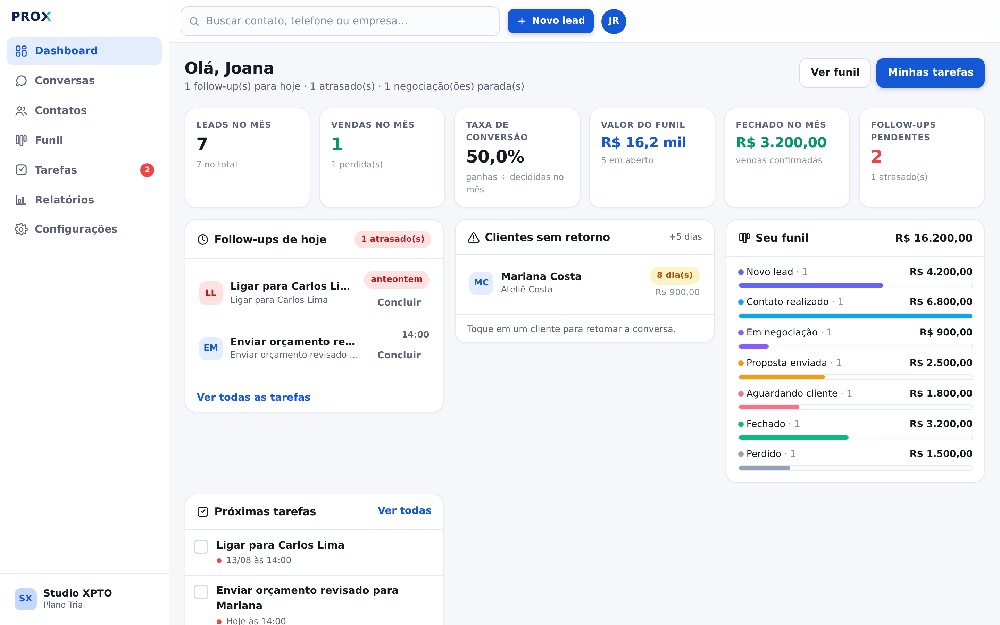
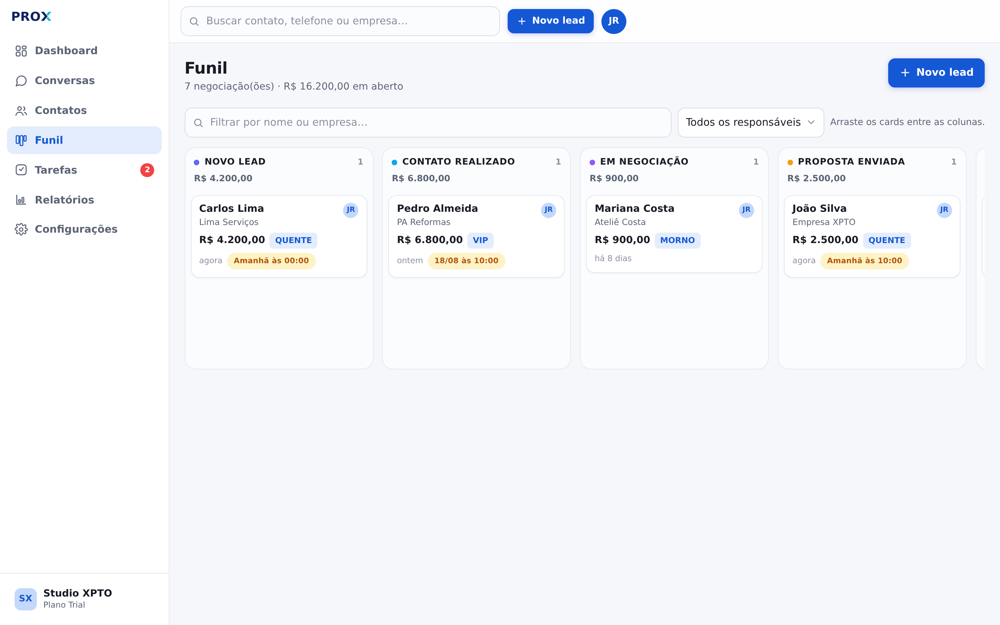
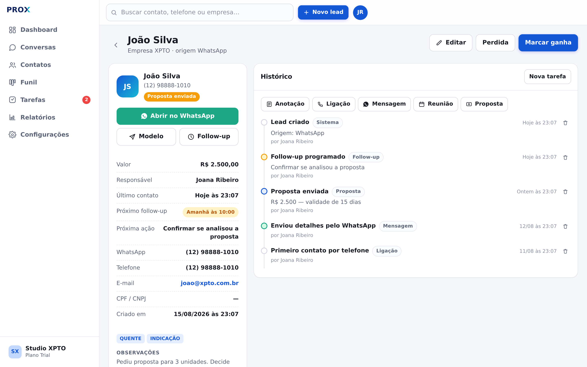
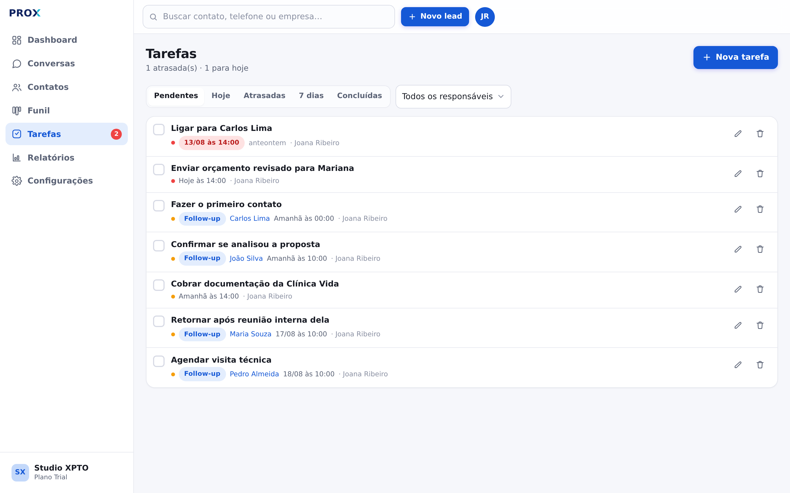
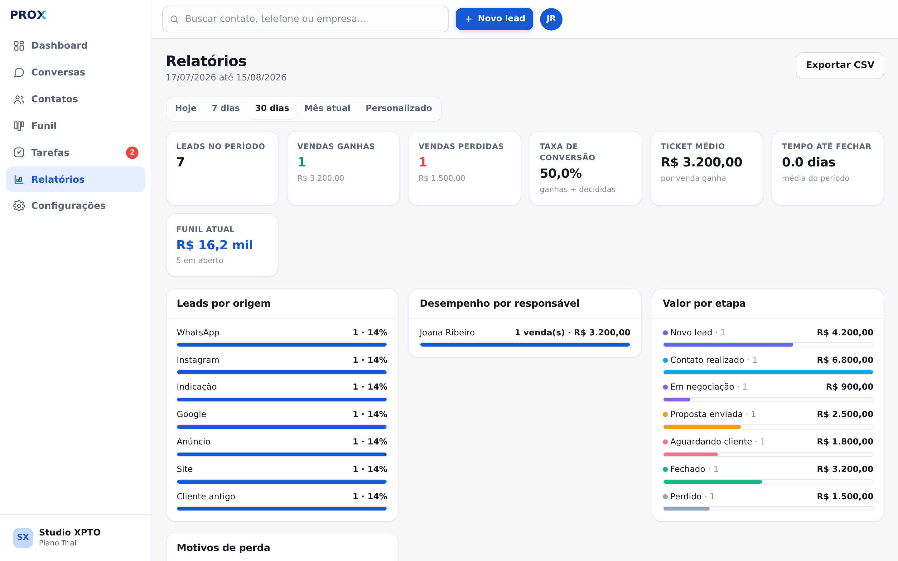
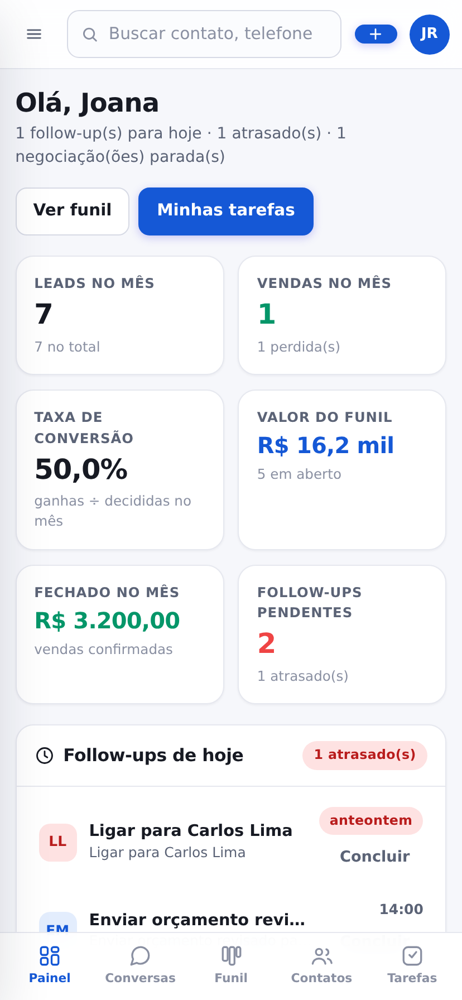

“Esqueci de responder”
O cliente pediu para retornar na sexta. Sexta chegou e passou, e a mensagem ficou soterrada por outras conversas.
Você atende pelo WhatsApp, envia orçamento, conversa — e a venda esfria porque ninguém lembrou de retornar. O Prox transforma essas conversas em um funil organizado, com follow-up na hora certa.
Não precisa instalar nada. Funciona no computador e no celular.

Não é falta de cliente. É a conversa que se perde no meio de dezenas de outras.
O cliente pediu para retornar na sexta. Sexta chegou e passou, e a mensagem ficou soterrada por outras conversas.
Sem histórico, cada retomada começa do zero — e o cliente percebe que você não lembra do que combinaram.
As propostas enviadas estão espalhadas no histórico do WhatsApp, sem nenhuma soma no fim do mês.
As telas abaixo são do sistema real, com dados de demonstração.
O painel responde de cara as perguntas que importam: quem precisa de follow-up hoje, quem está atrasado e quais negociações pararam.
Cada negociação é um card. Mova entre as etapas e o sistema grava sozinho, registrando a mudança no histórico do cliente.

Ligações, mensagens, reuniões e propostas ficam numa linha do tempo. Antes de retomar a conversa, você lê em dez segundos o que já aconteceu.

Ao terminar um atendimento, escolha “amanhã”, “em 3 dias” ou uma data. A tarefa é criada e aparece no painel no dia certo.

Quantos leads entraram, quantos viraram venda, de onde vieram e quanto tempo levou para fechar.


Quem vende pelo WhatsApp está no celular o dia todo. O Prox foi desenhado para isso: botões grandes e as ações mais comuns a um toque.
Sem instalação, sem integração obrigatória e sem cartão de crédito.
Com e-mail e senha ou pela conta Google. Depois dê um nome ao workspace da sua empresa.
Cadastre um a um ou importe uma planilha em CSV — com uma etapa de conferência antes de gravar.
Mova os cards, registre o que foi conversado e agende o próximo retorno. O painel cuida de lembrar você.
Quer só experimentar? Em Configurações › Dados há um botão que cria leads e tarefas de exemplo para você navegar sem cadastrar nada.
Cada workspace é uma caixa fechada. Nenhum usuário de outra empresa alcança seus contatos — isso é garantido no próprio banco de dados, não apenas na tela.
O administrador vê tudo e gerencia a equipe. O vendedor trabalha com a própria carteira de clientes e tarefas.
As chaves das integrações ficam apenas no servidor. Nada de token sensível trafegando na tela do usuário.
Leva um minuto para criar a conta. A partir daí, nenhuma conversa se perde no meio do caminho.
Acessar o Prox CRM